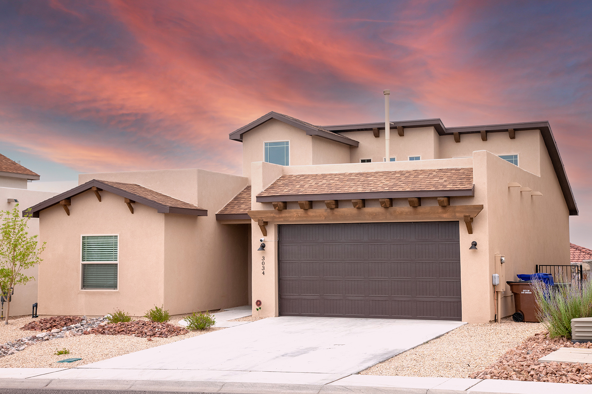
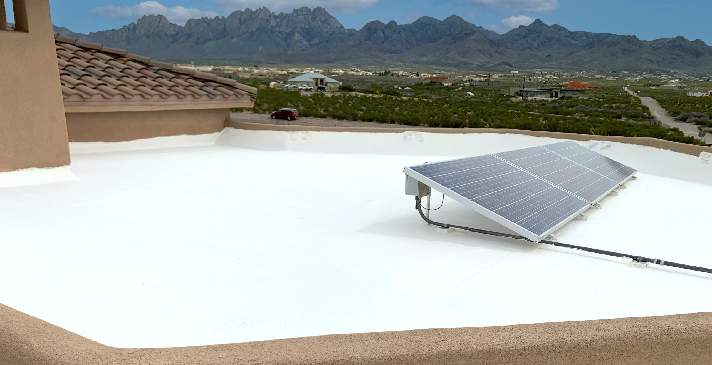
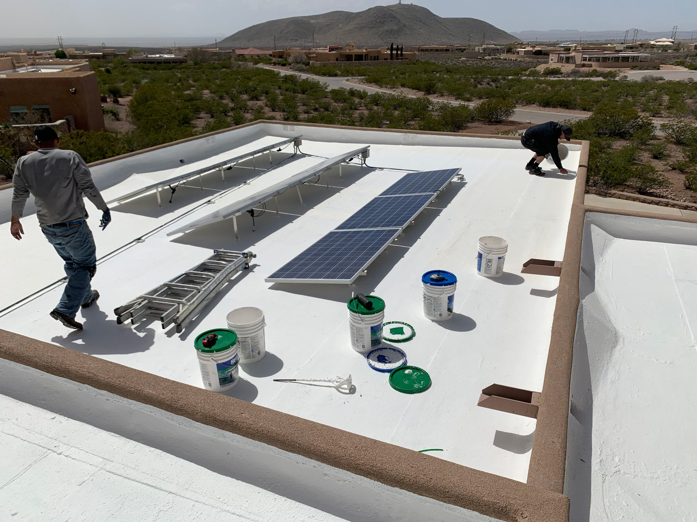
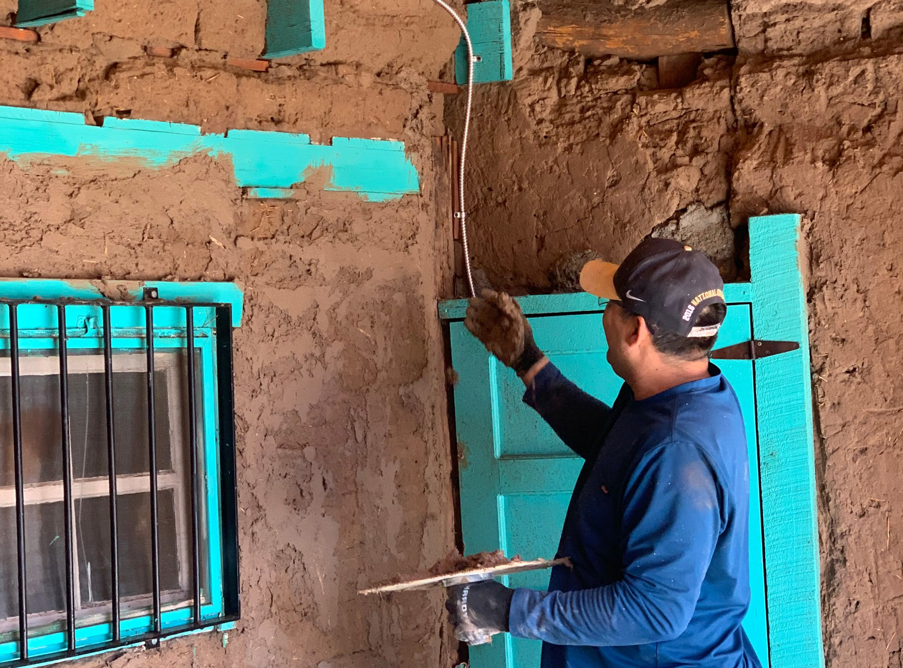
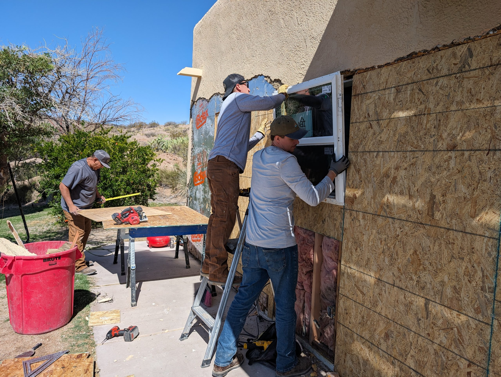
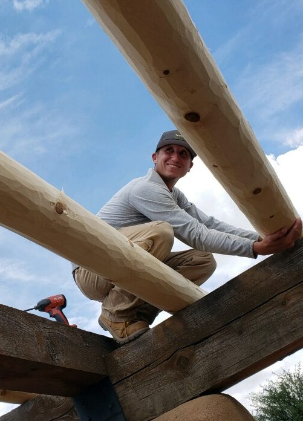
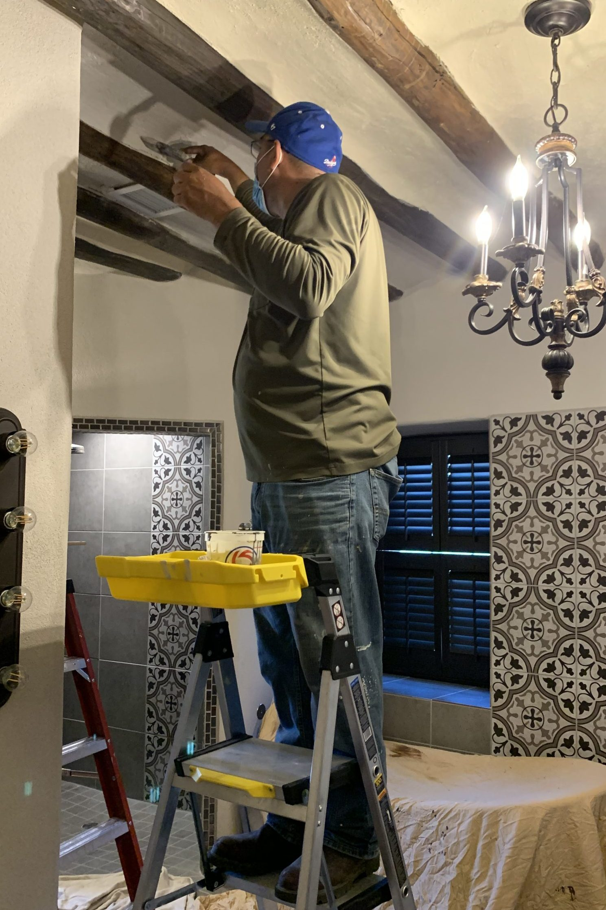

Residential

Southern New Mexico Construction
Residential, commercial, industrial, roof coating, and restoration work led with steady communication, practical planning, and crews who know the jobsite.
About Tomlen
Tomlen Construction serves Southern New Mexico with dependable building work, practical project management, and a hands-on approach from the first walkthrough through the final detail.
Selected work



Services
Planning, coordination, scheduling, and jobsite communication from start to finish.
Custom homes, additions, repairs, upgrades, and detailed finish work.
Tenant improvements, facility work, site upgrades, and large-scale build support.
Elastomeric roof coating systems built for waterproofing, durability, and efficiency.
Careful restoration that respects original character while improving performance.
Ground-up work, repairs, remodels, and problem solving for real jobsite conditions.

Built around momentum
The crew


Ready to build?
Bring the scope, the address, the timeline, and the questions. Tomlen can help turn the first walkthrough into a clear next step.